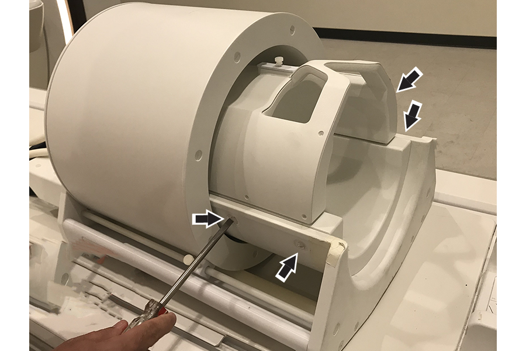
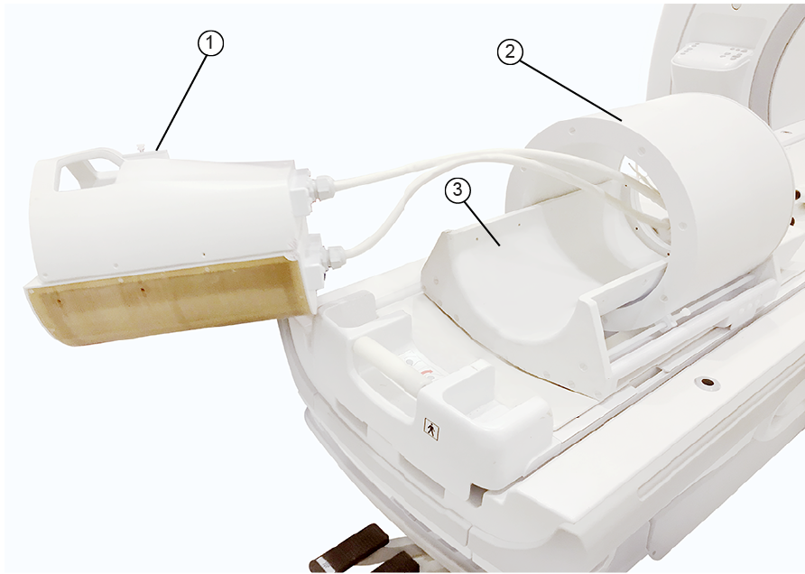
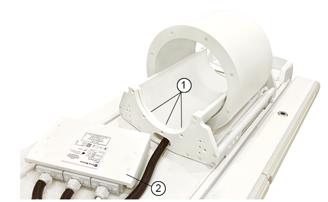
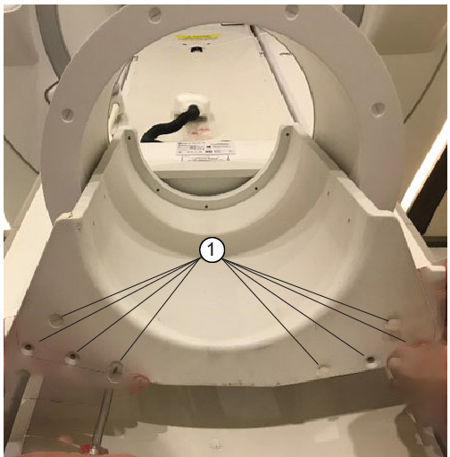
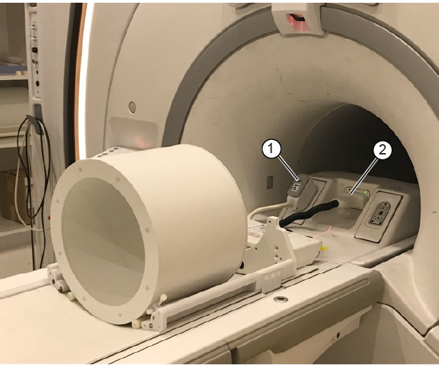
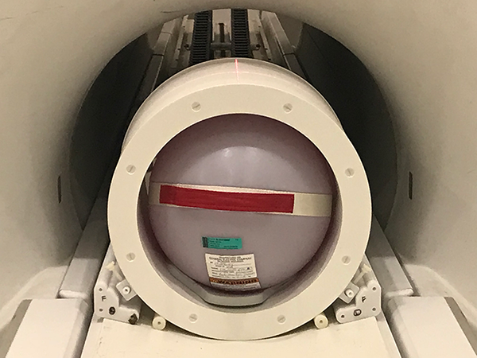
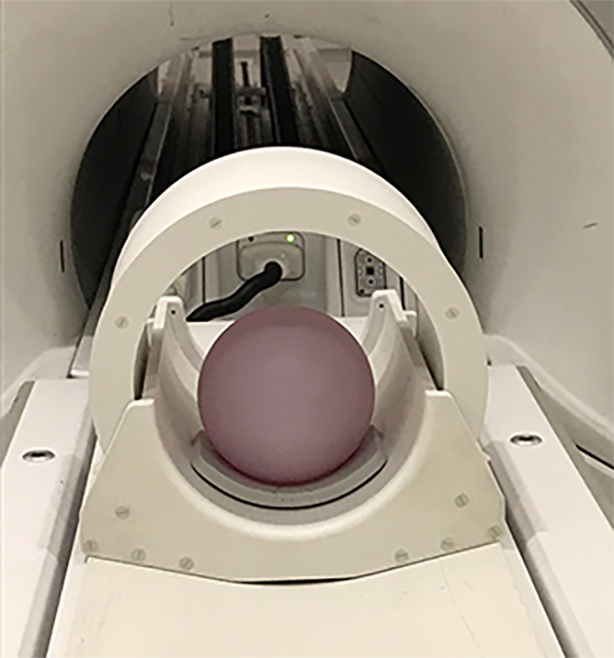

coll_t_LVShimTool
Prerequisites
Procedure
- Make sure that all coils have been removed from the cradle and phantoms from the bore.
- Place the LVShim phantom on the patient table.
Figure 1. Placing the LVShim phantom on the patient table
- Set up and align the LVShim phantom. Align the phantom so that:
- The phantom’s seam is oriented perpendicular to the table.
- The phantom’s z-axis is along the length of the cradle.
- The phantom is centered left to right with respect to the cradle top.
- Landmark on the LVShim phantom crosshairs.
- Press Advance to Scan.
- Start the LVShim tool:
- (For non-proprietary mode) From the Common Service Desktop, select , then select Click here to start this tool.
By default, Gradshim is performed in auto mode, though manual mode is also available. - In auto mode, the tool does the following:
- Sets up the protocol and collects image data
- Calculates linear harmonics and compares it with the specification
- Calculates the delta currents and the new currents based on the harmonics (dc offsets for X, Y, and Z)
- Completes multiple iterations (maximum = five) until harmonics meets the specification
- Shows the reanalysis of the last iteration in the final column in test mode (customer acceptance specification)
- 7T System Phantom setup
- Position the Nova 2Ch Tx head coil on the cradle and plug in the A-port connector.
- Remove the four nylon screws securing the 32 channel insert to the Nova head coil assembly.
Figure 2. Disconnect the insert

- Disconnect the cables attaching the insert to the patient table and remove the insert.caution: Do not carry the 32Ch insert by the opening on top of the coil. This may damage the coil assembly. Carry the coil from underneath coil assembly.
Figure 3. Remove the insert

1 Insert 2 Head coil 3 Tray - Remove the three screws securing the interface box to the head coil tray. Set the interface box aside.
Figure 4. Remove the interface box and head coil tray

1 Interface box screws 2 Interface box - Remove the nylon screws securing the head coil tray to the Nova head coil. Remove the head coil tray.
Figure 5. Remove the head coil tray

1 Screw locations - Turn on the alignment light and move the coil in so the crosshair is centered on the head coil. Do not landmark yet.
- Connect the Nova head coil cables.
Figure 6. Connect the Nova head coil cables.

1 P port 2 A port - Slide the coil back, and position the head TLT sphere on one of the thin gray head coil cushion pads, centered under the alignment light crosshairs.
- Position the inner sphere phantom inside the head coil. Align the phantom so that:
- The phantom's seam is oriented perpendicular to the table.
- The phantom's X axis is along the length of the cradle.
- The phantom is centered left-to-right with respect to the cradle top.
Figure 7. Positioning the LVShim phantom

- Slide the head coil back into position. Press the Landmark, then the Advance to Scan buttons.
Figure 8. Phantom set-up inside the head coil

- Disconnect the Nova head coil cables.
Figure 9. Disconnect the Nova head coil.
1 P port 2 A port - Position the head coil tray on the head coil. Secure with eight nylon screws.
Figure 10. Install the head coil tray
1 Screw locations - Position the interface box on the head coil tray and secure with three screws.
Figure 11. Install the interface box and head coil tray
1 Interface box screws 2 Interface box - Install the 32Ch insert in the head coil.caution: Do not carry the 32Ch insert by the opening on top of the coil. This may damage the coil assembly. Carry the coil from underneath coil assembly.
Figure 12. Install the insert
1 Insert 2 Head coil 3 Tray - Secure the 32Ch insert to the nova head coil with four screws.
Figure 13. Secure the insert
- Remove the Nova 2Ch Tx head coil from the cradle.